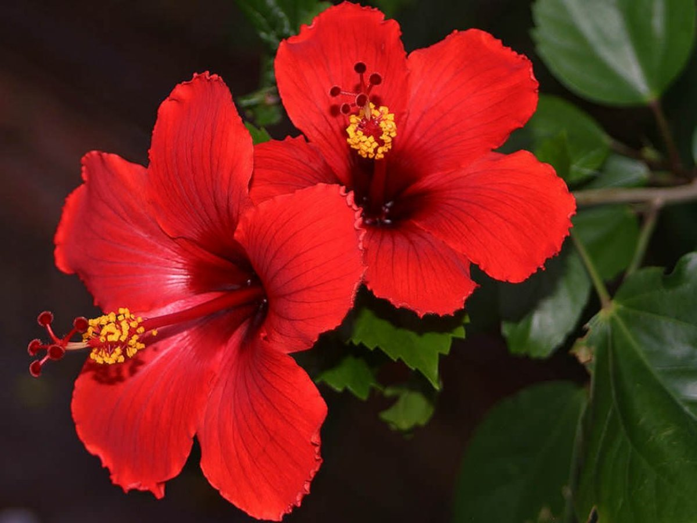

MY GRANDPA'S GARDEN!
Introduction
My Grandpa has had a hobby for gardening for around 50 years now! Every once in a while, he grows more flowers, plants, and even his own food! That is quite a feat, isn't it! So, I have dedicated this website to my grandpa. This website will contain many images of different plants and flowers, and will give tips on how to grow each and every one of them! I hope you enjoy!
FLOWERS
- Rose

- Marigold

- Tulips

- Hibiscus

To learn about how to grow roses, wisit this website! https://bioadvanced.com/growing-roses-secrets-success
How to grow a marigold: Sow seed directly in the ground and cover with a thin layer of soil (about 1/8 inch deep). Water thoroughly. Thin to 8-18 inches apart after seedlings have sprouted. The marigold plant can also be started early indoors under grow lights for transplanting outdoors about six to eight weeks before the last frost date.
How to grow a Hibiscus: Choose a site that gets full sun; they'll grow in partial sun but not flower as well. Hibiscus prefer well-draining soil with plenty of organic matter, and neutral to slightly acidic soil. To avoid breakage of the long stems, plant hibiscus where they won't be exposed to strong winds.
How to grow a Tulip: almanac.com/plant/tulips